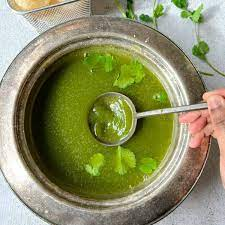
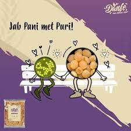

Ingredients
32 Puris or Golgappa (ready-made or homemade)
1 medium Onion, finely chopped (optional)
1/4 cup Date Tamarind Chutney, optional
Ingredients for Pani
1/2 cup Mint Leaves
1/2 cup Coriander Leaves, chopped
1-2 Green Chilli, chopped (or to taste)
1/2 inch pieces of Ginger
1½ medium size Lemon
3 tablespoons Sugar
1 teaspoon Chaat Masala Powder
1/4 teaspoons Black Salt (kala namak / sanchal)
4 tablespoons Boondi, optional
Salt to taste
4 cups Water
Ingredients for Masala
1½ cups boiled, peeled and mashed Potato (approx. 3 medium)
1/2 cup boiled Kala Chana (black chickpeas)
1/2 teaspoon Red Chilli Powder
1/2 teaspoon Cumin-Coriander Powder
1/4 teaspoon Chaat Masala Powder
2 tablespoons finely chopped Coriander Leaves, optional
Salt to taste
NOTES: Soak the kala chana (1/4 cup) for 7-8 hours or overnight in water. Boil chana and potatoes with salt and water in a pressure cooker for 3-4 whistles over medium flame or until cooked.
Method for Pani:
Step-1
Rinse coriander and mint leaves in water and take all the ingredients of pani.

Step-2
Add mint leaves, coriander leaves, green chilli, ginger and lemon juice (lemon juice is added while grinding to prevent the mint leaves from turning dark) in the small chutney jar of a grinder.

Step-3
Grind until smooth paste (if required, add 1/4 cup water while grinding).

Step-4
Transfer them to a large bowl and add sugar, chaat masala powder, black salt and 4 cups water. Stir with a large spoon and mix it properly. Taste for the salt and add as required. Pani is ready; place it in a refrigerator for at least 1-hour before serving or use it at room temperature. If you like soft boondi, mix it now. If you like crispy taste of boondi then mix it at the time of serving.

Method For Masala:
Step-1
Take mashed potato, kala chana, red chilli powder, cumin-coriander powder, chaat masala powder, coriander leaves and salt (add only if you have not added while boiling the potatoes and chana) in a bowl.

Step-2
Mix them together with a spoon. Masala is ready.

Assemble Pani Puri:
Step-1
Take each puri and gently make a large hole on its top-middle side with a spoon or your index finger or thumb for stuffing.

Step-2
Stuff it with masala (more or less, as you like). Sprinkle onion and sev over it and drizzle a drop of date tamarind chutney over it. Take pani-puri water in a medium bowl. Dip each puri in water and enjoy…!

